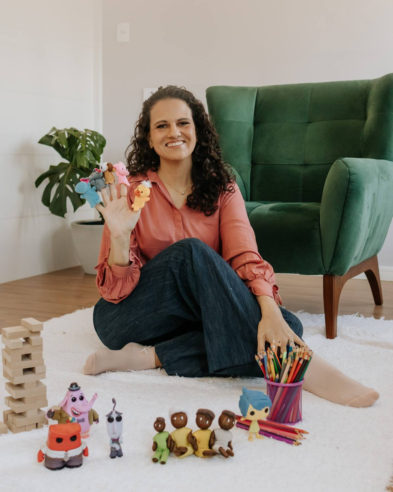

Psicóloga Loredana Amaral Marzocchella · CRP 12/15063
Um espaço de escuta, no seu tempo.
Psicoterapia para crianças, adolescentes e adultos. Presencial na Trindade, em Florianópolis, e on-line.
Conversar no WhatsAppTudo o que você traz tem lugar aqui.
Às vezes é difícil saber por onde começar. Na terapia, você encontra uma escuta atenta, ética e sem julgamentos, para olhar com calma para o que está sentindo e encontrar, no seu ritmo, novas formas de lidar com o que vive.

Sobre mim
Sou a Loredana.
Sou psicóloga e atendo crianças, adolescentes e adultos, no consultório da Trindade, em Florianópolis, e on-line.
Meu trabalho parte da escuta: entender quem você é, o momento que está vivendo e o que te trouxe até aqui, respeitando o tempo de cada pessoa.
Na primeira conversa, conto sobre minha formação e sobre a forma como conduzo os atendimentos, e você tira todas as dúvidas antes de começar.
Psicóloga Loredana Amaral Marzocchella — CRP 12/15063
Como trabalho
O que esperar da terapia
A frequência, a duração dos encontros e a forma de trabalhar são conversadas logo no primeiro contato.
-
Escuta sem julgamentos
Um espaço para falar com liberdade sobre o que você sente, pensa e vive, com respeito à sua história.
-
Ética e sigilo
O que é conversado nas sessões é tratado com sigilo, como determina o Código de Ética Profissional do Psicólogo.
-
Cuidado com cada fase
O atendimento se adapta à idade e ao momento de cada pessoa: infância, adolescência ou vida adulta.
-
Presencial ou on-line
Sessões no consultório da Trindade, em Florianópolis, ou on-line, de onde você estiver.
Para quem
Atendimento para cada fase da vida
-
Infância
Crianças
Um espaço acolhedor, adequado à idade, para a criança expressar o que sente e ser compreendida.
-
Adolescência
Adolescentes
Escuta para as dúvidas, as mudanças e as pressões dessa fase, com respeito ao jeito e ao tempo de cada adolescente.
-
Vida adulta
Adultos
Um tempo só seu para olhar com calma para emoções, relações e escolhas, e para o que está pesando agora.
Dúvidas
Perguntas frequentes
O atendimento é presencial ou on-line?
Os dois. O presencial é no consultório da Trindade, em Florianópolis. O on-line é feito à distância, de onde você estiver.
Onde fica o consultório?
Na Rua Lauro Linhares, 2123, Torre A, sala 404, no bairro Trindade, em Florianópolis/SC. Ver no Google Maps
Você atende crianças? A partir de que idade?
Sim, atendo crianças, adolescentes e adultos. Para saber se o atendimento é indicado para a idade e o momento do seu filho ou filha, mande uma mensagem pelo WhatsApp.
Quanto tempo dura cada sessão?
A duração e a frequência dos encontros são combinadas no início do processo, de acordo com cada caso.
Quais são os horários de atendimento?
Os horários são combinados pelo WhatsApp, de acordo com a agenda disponível.
Como faço para começar?
Mande uma mensagem pelo WhatsApp. Por lá você tira suas dúvidas e combina o primeiro encontro.
Pedir ajuda é um passo de cuidado consigo.
Contato
Vamos conversar?
Mande uma mensagem pelo WhatsApp para tirar dúvidas e combinar o primeiro encontro.
Conversar no WhatsApp- (48) 98868-6085
- R. Lauro Linhares, 2123, Torre A, sala 404 · Trindade, Florianópolis/SC
- Atendimento presencial e on-line · horários combinados pelo WhatsApp